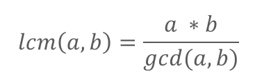

This page contains a set of excercises for the corresponding chapter.
Read the task description, copy the code template if present and solve it in your Eclipse.
If you are stuck, you can show the solution for this task. Be careful not to spoil the solution for yourself unnecessarily.
Implement a function gcd, which returns the greatest common divisor of two parameters.
Feel free to reuse the previous solution from chapter 2, just wrapt it up in a function.
Implement a function lcm, which returns the least common multiple of two parameters.

Test your implementation.
Just as an example: gcd(15, 21) = 3, lcm(15, 21) = 105.
Declare a composition Point, which stores x and y coordinates.
Create a list of points and fill it with five points using the function f(x) with x ∈ [1, 2, 3, 4, 5].
Implement a procedure drawLine(...) which accepts a list of points as a parameter and draws a line according to this list.
Be aware, that you have to translate point coordinates into pixel coordinates before drawing.
You can use the Turtle.moveTo(x, y) operation.
Move parts of your previous chessboard implementation from chapter 3 into operations:
The operation initialiseBoard(...) should include the previous initialization semantics.
The operation printBoard(...) should include the previous printing on the console semantics.
The operation drawBoard(...) must draw the chessboard using Turtle.
You can increase the drawing speed using Turtle.setAnimationSpeed(Turtle.Speed.FAST).